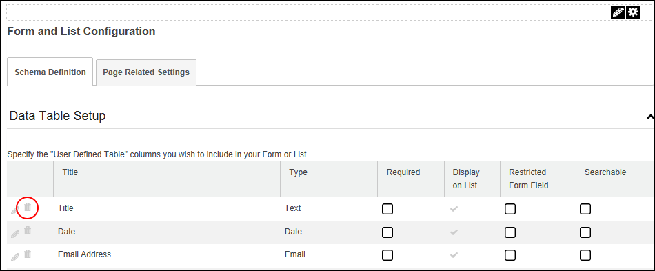

Deleting List or Form Columns
How to delete one or more columns in a list or form created using the Form and List module. When this module is configured as a list, deleting a column permanently deletes both the column and any data entered for that column.
- Select
 Form and List Configuration from the module actions menu.
Form and List Configuration from the module actions menu.
- Click the Delete
 button beside the column to be deleted. This displays the message "Are You Sure You Wish To Delete This Column?"
button beside the column to be deleted. This displays the message "Are You Sure You Wish To Delete This Column?"

- Click the OK button to confirm deletion.
- Repeat Steps 2-3 to delete additional columns.
- Click the Save Configuration and Return button to return to the module.